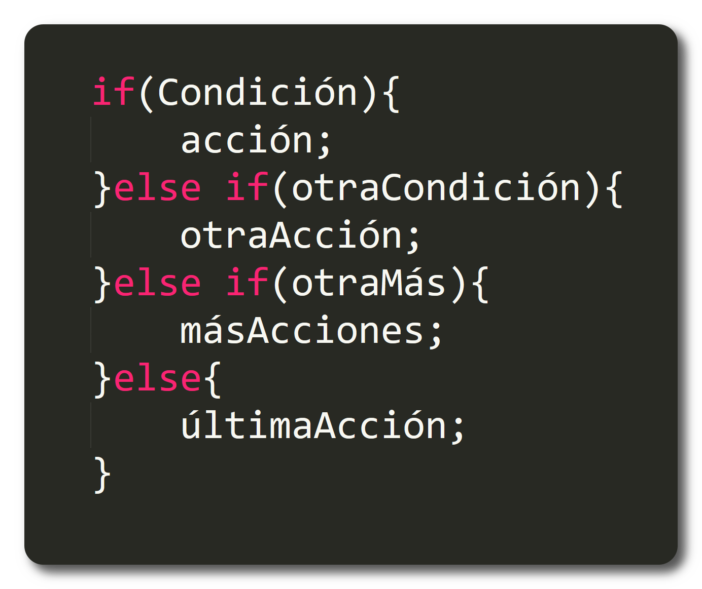

Datos sobre PHP
- Significaba originalmente Personal Home Page
- PHP ahora se conoce oficialmente como 'Hypertext Preprocessor' (Procesador de Hypertexto) y fue lanzado en 1995.
- Inicialmente escrito como un conjunto de Common Gateway Interface (CGI) en “C” (1994).
- PHP fue diseñado originalmente para reemplazar un conjunto de scripts de Perl para mantener las Personal Home Pages (También conocidas como PHP).
- PHP fue creado originalmente por Rasmus Lerdlof en 1995. Escribió los binarios originales de Common Gateway Interface (CGI).
- Zeev Suraski y Andi Gutmans, dos desarrolladores en el Technion IIT, reescribieron el analizador sintáctico en 1997 y formaron la base de PHP 3.
- Suraski y Gutmans reescribieron el núcleo de PHP 3, produciendo Zend Engine en 1999. También fundaron Zend Technologies en Ramat Gan, Israel.
- El 22 de mayo del 2000, fue lanzado PHP 4 por Zend Engine 1.0
- La implementación principal de PHP ahora es producida por The PHP Group y sirve como el estándar de facto para PHP ya que no hay una especificación formal.
Variables
Un elemento que permite almacenar información.
- Debe empezar por $
- Puede contener letras, números o guiones bajos
- Distingue entre mayúsculas y minúsculas.
- Se recomienda utilizar notación "camel case".
Asignación de valor:
- Se utiliza el operador =.
- No se necesitan comillas para números.
- Se necesitan comillas para cadenas de texto (dobles o simples).
Constantes
Un identificador para un valor simple que no cambia.
- Comienza con una letra o guión bajo
- No lleva $
- Son automáticamente globales
Operadores
Operadores de comparación
==, !=, <, >, <=, >=.
Operadores Aritméticos
+, -, *, /, %, etc.
Operadores lógicos
&&, ||, !.
Incremento/Decremento
++/--
Estructuras condicionales
IF
La expresión se evalúa siempre.Si el resultado es TRUE, se ejecuta el bloque de sentencias. Si el resultado es FALSE, no se ejecuta el bloque de sentencias.
If Else
Se evalúa la expresión_1. Si el resultado es TRUE, se ejecuta el bloque_de_sentencias_1. Si el resultado es FALSE, se ejecuta el bloque_de_sentencias_2.

If.. Elseif
Se evalúa la expresión_1. Si el resultado es TRUE, se ejecuta el bloque_de_sentencias_1 y finaliza; si el resultado es FALSE, se evalúa la expresión_2; si el resultado es TRUE, se ejecuta el bloque_de_sentencias_2 y finaliza. Si el resultado es FALSE, se ejecuta el bloque_de_sentencias_3.
Switch
Se evalúa la expresión. Compara el resultado con cada valor_i. Si se encuentra una coincidencia, se ejecuta el bloque_de_sentencias_i y se termina la evaluación, si no se encuentra ninguna coincidencia, se ejecuta el bloque_de_sentencias_n
Estructuras de bucles
While
La expresión se evalúa al principio de cada iteración. Si el resultado es TRUE, se ejecuta el bloque de sentencias y se vuelve a evaluar la expresión. Si el resultado es FALSE, el bucle termina.
Do While
Se ejecuta el bloque de sentencias al menos una vez. La expresión se evalúa al final de cada iteración. Si el resultado es TRUE, se ejecuta el bloque de sent.